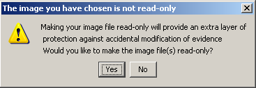
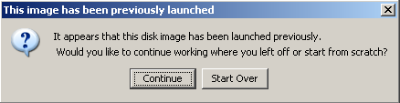
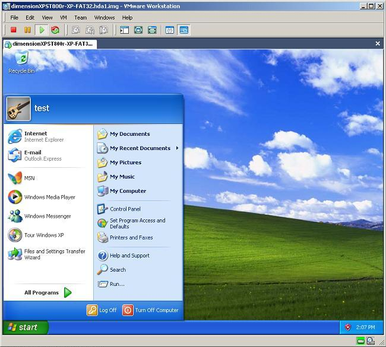

Quick Start.
This guide should serve as a quick way to get up to speed with OpenLV.
Thanks to OpenLV users, this guide is also available in the following language:
Step 1 - Set VM Parameters

First select your Set VM Parameters:
-
RAM Size:
The amount of RAM on your computer allocated to the
virtual machine. Ideally this value should match the amount of RAM
that was installed on the machine from which you created your image, but clearly
must be smaller than the amount of RAM on your machine running OpenLV.
-
Operating System:
This is the operating system contained on the disk
image or physical disk you are trying to boot. Note that the Auto Detection
feature only works for full disk images (not partitions). OpenLV is fairly
forgiving about incorrectly identifying the OS so you may be able to get away with
choosing any OS that is similar to the actual OS contained on the disk image.
-
System Time:
The is the date/time used by the system during boot time. Ideally, this
should be set to the date/time at which the image was created to minimize the impact of
potential time-trial or time-bomb software on the system.
Step 2 - Select Image or Device

If you would like to boot from a disk image file, click the Browse button to select the image of the machine from which you would like to boot:
-
Make sure this is a bit-for-bit "raw" disk or partition image. If it is not, you may use a third party image mounting tool such as
Mount Image Pro or Physical Disk Emulator
to mount the image and boot it as a physical disk (see below).
-
The image may be located on your local machine, an encrypted network share,
or anywhere you can navigate to in a standard Windows "browse" dialog box.
-
You may use "split" or "chunked" images by multi-selecting all of the chunks
with CTRL+Click or SHIFT+Click in the browse dialog box. Some imaging programs
split the image into chunks so they can easily fit on a CD, DVD, or FAT filesystem.
Just make sure you select all of the associated chunks and that their file extensions
are either numeric or alphabetical as OpenLV will order them by sorting their file extensions.
If, however, you would like to boot from a physical disk select the physical disk option

Select the device from which you would like to boot from the drop-down menu:
-
The physical disk can be connected directly to the machine running OpenLV or connected via a USB or FireWire bridge.
This bridge can also be a writeblocker (for an added layer of protection)
as OpenLV only needs read access to the device. You may also use third party image mounting software to access an image as a physical disk.
-
If you do not see your device in the drop-down menu, make sure it is connected to your machine. You may want
to check that it has been recognized by Windows and shows up as a "drive letter" on your system. You may need
to select the image file option and reselect the physical device option to re-populate the drop-down menu with
the most current list of connected devices.
Step 3 - Select Output Directory

Next, select the output directory by clicking the browse button:
-
The output directory is where all of the files representing the virtual machine will be placed.
This includes the configuration files and the "overlay" file containing all of the changes that
would have been made to the original disk or image.
-
This directory could be on your local machine, network share, or anywhere you can navigate to
from a standard Windows "browse" dialog box.
-
The virtual machine grows in size as it is used (because all of the writes made to disk
are saved in the "overlay" file in this directory). Initially you will require at least a
few hundred megabytes of free space for the virtual machine but you may want to choose a
directory with a few gigabytes of free space if you plan to make heavy use of the virtual
machine.
Step 4 - Launch or Generate VM

Next choose what you would like to do with your image
-
Launch My Image:
By selecting this option, OpenLV will create the VMware virtual machine out of your
disk image and launch it in VMware.
-
Generate Config Only:
By selecting this option, OpenLV will create the VMware virtual machine out of your
disk image but will not automatically launch it in VMware. With this option you can simply
navigate to your output directory selected in the previous step and double click the .vmx
file With the same prefix as your image file to launch the virtual machine manually.
Step 5 - Click Start

Finally, click the start button and let OpenLV take care of the rest
-
Launching an image typically takes under thirty seconds. The messages window
will provide you with updates on its progress.
-
The messages window will report any problems encountered during the process
that may have prevented OpenLV from successfully creating your virtual machine.
-
Clicking the clear button will clear the messages window.
Message Prompts

You may get a "read only" message prompt
-
If you attempt to create a virtual machine out of a raw disk image, OpenLV will
automatically check if that file has the read-only flag set. If it does not, you
will be asked whether or not you would like to set the file as read-only. Click yes
to set the read-only flag on your image file(s) or click no to leave them alone.
-
Note that setting the read-only flag on your file(s) is just an extra layer of protection
against the accidental modification of your image file(s). OpenLV will not modify your images
if you choose not to set the read-only flag. Also note that setting the read-only flag on your image
file(s) will not modify their cryptographic hash.

You may also receive a "previous launch" message prompt
-
If this is not the first time you have launched your disk image, you will receive a prompt asking you
if you would like to either continue With the old virtual machine or start over by generating a new one.
-
If you choose "continue", OpenLV will simply reuse the old virtual machine it generated. This virtual machine will contain
all of the changes you have made (changed MAC times, installed software, etc) that were contained in the "overlay" file.
-
If you choose "start over", OpenLV will delete the old virtual machine and generate a completely new one. This means
that all of the changes you made to the machine will be wiped away and you will be booting the image or physical disk
from its original pristine state (with a fresh, blank "overlay" file).
Interacting With the Virtual Machine

Now you can interact With the machine as you would any other. You can install software,
insert CD's or USB keys, read/modify/create files, etc.
-
To use the machine, you must click inside the VMware window to give it
"focus." You mouse movements will be inside the virtual machine until you release
it by using the keyboard combination CTRL+ALT.
-
To make the machine full screen, use the keyboard combination: CTRL+ALT+ENTER.
To go back to the smaller view, use the keyboard combination CTRL+ALT.
-
To stop the virtual machine you may click the red square which is equivalent to
pulling the power plug on a system.
-
When you are done working With the machine, you can simply shut it down or hit the red
square on the VMware GUI. To boot the machine back up again with all of the changes you
have made, you can either navigate to your output directory and double click the .vmx file
for your image or you can use the OpenLV GUI and select "continue" when prompted to start over
or continue where you left off.
-
If you want to remove all of your changes and start from scratch again, simply hit the
red square to shut off the virtual machine and then close the VMware window. Go back to
the OpenLV GUI and re-launch your image or disk. When prompted to "continue or start over",
be sure to select "start over." This will boot the machine from its original unmodified state.
-
The machine may go through a variety of hardware detection steps. This is because
the system is recognizing all of the new hardware (VMware virtual hardware) present
on the machine.
-
For better performance (and higher resolution) you can install the VMware tools. To do this,
click VM->Install VMware Tools on the VMware menu. This will require a reboot of the Virtual Machine
but will provide much smoother performance once installed.